1032D12 timing system protective cover(s) - r + r
- Path
- Procedures > 10 ENGINE > 1032 TIMING SYSTEM > 1032D timing system protections > 1032D12 timing system protective cover(s) - r + r
- Kind
- repair procedure (removal / refitting; the operation number is the code)
- Applies to
- engines: 1.6 TS , 1.8 TS, 2.0 JTS, 2.5 V6, 3.2 V6, 1.9 JTD 8v , 1.9 JTD 16v, 2.0 JTS, 2.4 JTD 10v, 2.4 JTD 20v; all production periods
- Interactive page
- https://sloeber94.github.io/elrnDB-a156/en/#/3237498
Applies to: engines: 2.5 V6, 3.2 V6; all production periods
 Removing
Removing
 Refitting
Refitting4450B10 Front WHEEL (one) - R.R.
7055B64 Engine compartment DUST shield in front wheel arch (one), left or right - R.R.
1092G10 single engine belt r r
1. Undo the bolts (1a) and remove the upper timing gear covers (1b).
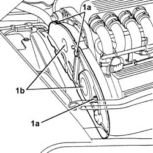
Applies to: engines: 2.5 V6, 3.2 V6; all production periods
Raise the car.
1. Undo the bolts (1a) and remove the lower timing gear covers (1b).
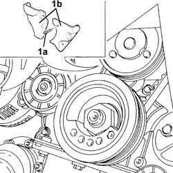
Applies to: engines: 2.5 V6, 3.2 V6; all production periods
Refitting
RemovingFit the lower timing gear covers and fix them using the bolts.
Lower the vehicle.
Fit the upper timing gear covers and fix them using the bolts.
1092G10 single engine belt r r
7055B64 Engine compartment DUST shield in front wheel arch (one), left or right - R.R.
Applies to: engines: 1.6 TS , 1.8 TS; all production periods
Removing
RefittingPosition the vehicle on the lift.
4450B10 Front WHEEL (one) - R.R.
7055B64 Engine compartment DUST shield in front wheel arch (one), left or right - R.R.
7055B54 under-engine guard - r r
1092G10 single engine belt r r
1092G20 engine component single belt fixed tensioner - one - r + r
1092A12 crankshaft pulley - r+r for versions with air conditioner
Applies to: engines: 1.6 TS , 1.8 TS; all production periods
Lower the vehicle.
1. Undo the bolts (1a) and remove the timing gear cover (1b).
2. Undo the bolts (2a) and remove the timing gear side guards (2b).
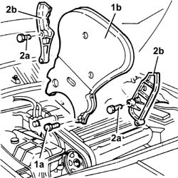
Applies to: all engines; all production periods
1. Undo the bolts (1a) and remove the lower protective timing cover (1b).
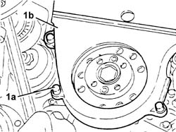
Applies to: all engines; all production periods
Lower the vehicle.
1. Undo the bolts (1a) and remove the upper timing gear cover (1b) complete with single drive belt (1c).
2. Undo the bolts (2a) and remove the timing gear side guards (2b).
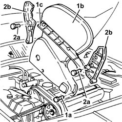
Applies to: engines: 1.6 TS , 1.8 TS; all production periods
Refitting
RemovingFit the timing gear side guards and fix them using the bolts.
Fit the timing gear cover and fix it using the bolts.
Applies to: all engines; all production periods
Fit the timing gear side guards and fix them using the bolts.
Fit the upper timing gear cover complete with single drive belt and fix it using the bolts.
Raise the car.
Fit the lower protective timing cover and fix it using the bolts.
Applies to: engines: 1.6 TS , 1.8 TS; all production periods
1092A12 crankshaft pulley - r+r for versions with air conditioner
1092G20 engine component single belt fixed tensioner - one - r + r
1092G10 single engine belt r r
7055B54 under-engine guard - r r
7055B64 Engine compartment DUST shield in front wheel arch (one), left or right - R.R.
4450B10 Front WHEEL (one) - R.R.
Remove the vehicle from the ramp.
Applies to: engines: 2.0 JTS, 2.0 JTS; all production periods
Removing
RefittingPosition the vehicle on the ramp.
Proceed with the removal 4450B04 right front wheel r r .
Proceed with the removal 7055B54 under-engine guard - r r .
Proceed with the removal 1016A40 ignition coil cover on cylinder head- r+r .
1. Undo the bolts (1a), nut (1b) and remove the engine components single drive belt protection (1c).
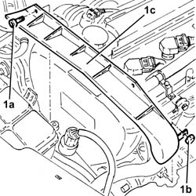
Applies to: engines: 2.0 JTS, 2.0 JTS; all production periods
1. Remove the buttons (1a), undo the attachments (1b) and remove the front right wheelarch mudguard (1c).
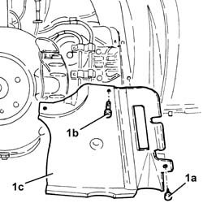
Applies to: engines: 2.0 JTS, 2.0 JTS; all production periods
1. Undo the nut (1a) and remove the brackets (1b) securing the power steering pipes.
2. Use a spanner on the moving tensioner (2a) and remove the single drive belt (2b).
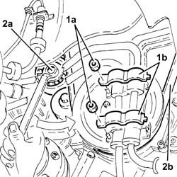
Applies to: engines: 2.0 JTS, 2.0 JTS; all production periods
1. Undo bolts (1a) and remove protection (1b).
2. Fit the flywheel lock.
 | Name | Country |
|---|---|---|
2 | Counter-torque | 1.860.898.000 |
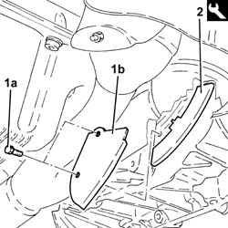
Applies to: engines: 2.0 JTS, 2.0 JTS; all production periods
1. Undo the bolts (1a) and remove the crankshaft pulley (1b).
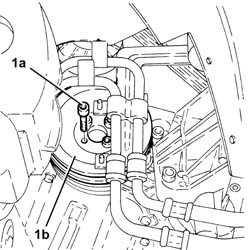
Applies to: engines: 2.0 JTS, 2.0 JTS; all production periods
1. Remove the cap (1a), undo the bolt (1b) and remove the single belt fixed tensioner (1c).
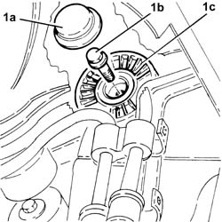
Applies to: engines: 2.0 JTS, 2.0 JTS; all production periods
1. Undo the bolts (1a) and remove the upper protective timing cover (1b).
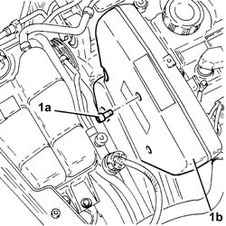
Applies to: engines: 2.0 JTS, 2.0 JTS; all production periods
1. Undo the bolts (1a) and remove the right side protective timing cover (1b).
2. Undo the bolts (2a) and remove the left side protective timing cover (2b).
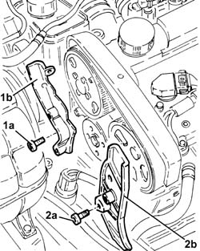
Applies to: engines: 2.0 JTS, 2.0 JTS; all production periods
1. Undo the bolts (1a) and remove the lower protective timing cover (1b).
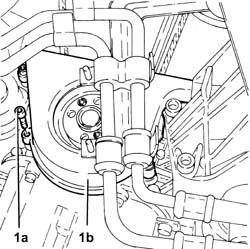
Applies to: engines: 2.0 JTS, 2.0 JTS; all production periods
Refitting
RemovingFit the lower protective timing cover and secure using the bolts.
Place the protective timing side covers back in their housings and secure them using the bolts.
Fit the upper protective timing gear cover and fix it using the bolts.
1. Place the engine components single drive belt fixed tensioner (1a) back in its housing and fix it tightening the bolt (1b) to the recommended torque.
 | Fastening | Component | Ø | Value (daNm) |
|---|---|---|---|---|
1b | Bolt | FIXED SINGLE SERVICE BELT TENSIONER | M8 | 2.2 ÷ 2.8 |
2. Place the engine components single drive belt fixed tensioner plug back in its seating.
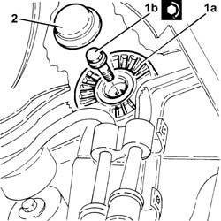
Applies to: engines: 2.0 JTS, 2.0 JTS; all production periods
Fit the flywheel lock.
| Name | Country |
|---|---|---|
- | Counter-torque | 1.860.898.000 |
1. Place the crankshaft pulley (1a) back in its seating and secure it tightening the bolts (1b) to the specified torque.
| Fastening | Component | Ø | Value (daNm) |
|---|---|---|---|---|
1b | Bolt | CRANKSHAFT PULLEY | M8 | 2.3 ÷ 2.8 |
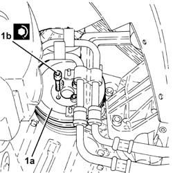
Applies to: engines: 2.0 JTS, 2.0 JTS; all production periods
Remove the flywheel lock.
| Name | Country |
|---|---|---|
- | Counter-torque | 1.860.898.000 |
Place the protection back in its housing and secure it using the bolt.
Use a spanner in an anti-clockwise direction on the moving tensioner and fit the engine components single drive belt.
Fit the brackets securing the power steering pipes in their seatings and secure them with their nuts.
Refit the right front wheel compartment mudguard in its seating and secure it with its fastenings and buttons.
Refit the engine components single drive belt protection in its seating and secure with its nut and bolts.
Proceed with the refitting 1016A40 ignition coil cover on cylinder head- r+r .
Proceed with the refitting 7055B54 under-engine guard - r r .
Proceed with the refitting 4450B04 right front wheel r r .
Remove the car from the ramp.
Applies to: engines: 1.9 JTD 8v , 2.4 JTD 10v; all production periods
Removing
Refitting4450B10 Front WHEEL (one) - R.R.
7055B64 Engine compartment DUST shield in front wheel arch (one), left or right - R.R.
1092G10 single engine belt r r
1092A12 crankshaft pulley - r+r for versions with air conditioner
1. Working from the wheelarch, undo the two bottom bolts on the lower timing gear covers.
Lower the vehicle.
2. Working from the engine compartment, remove the single drive belt fixed tensioner plug.
3. Undo the bolt (3a) and remove the fixed single drive belt tensioner.
4. Undo the remaining bolt (4a) and remove the lower timing gear cover (4b).
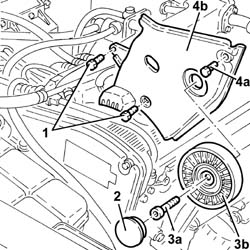
Applies to: engines: 1.9 JTD 8v , 2.4 JTD 10v; all production periods
1. Disconnect the water return pipe to the expansion tank.
2. Undo the bolts (2a) and remove the power unit reaction rod (2b).
3. Undo the bolts (3a) and remove the upper timing gear cover (3b).
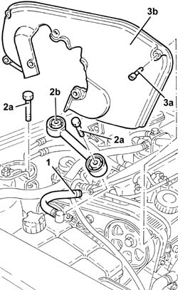
Applies to: engines: 1.9 JTD 8v , 2.4 JTD 10v; all production periods
Refitting
RemovingFit the upper protective timing gear cover and fix it using the bolts.
Fit the reaction rod for the power unit and fix it tightening the bolts to the recommended torque.
| Fastening | Component | Ø | Value (daNm) |
|---|---|---|---|---|
- | Bolt | REACTION ROD | M10 | 4.2 ÷ 5.1 |
Connect the water return pipe to the expansion tank.
Fit the lower protective timing cover and fix it using the bolts.
Fit the single belt fixed tensioner and fix it tightening the bolt to the recommended torque.
| Fastening | Component | Ø | Value (daNm) |
|---|---|---|---|---|
- | Bolt | FIXED SINGLE SERVICE BELT TENSIONER | M8 | 2.1 ÷ 2.6 |
Fit the cap on the single belt fixed tensioner.
1092A12 crankshaft pulley - r+r for versions with air conditioner
1092G10 single engine belt r r
7055B64 Engine compartment DUST shield in front wheel arch (one), left or right - R.R.
Applies to: engines: 1.9 JTD 16v; all production periods
Removing
RefittingPosition the vehicle on the ramp.
Proceed with removal 1016A10 sound-proofing cover - r + r .
Ensure that the ignition key is in the OFF position, then disconnect the negative battery terminal (-).
 | Name | Connector |
|---|---|---|
- | Battery |
Proceed with removal 1008C10 power unit upper reaction link r r .
Proceed with removal 1060G80 ds electric injection control unit - r r .
Proceed with removal 4450B04 right front wheel r r .
Proceed with removal 7055B54 under-engine guard - r r .
Proceed with removal - 7055B91 Right front WHEEL ARCH LINER - R.R. .
Proceed with removal 1092G10 single engine belt r r .
Proceed with removal 1092A10 Crankshaft services PULLEY - R.R. .
Proceed with removal 1092G20 engine component single belt fixed tensioner - one - r + r .
1. Undo the bolts (1a) and remove the lower protective timing cover (1b).
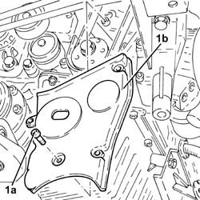
Applies to: engines: 1.9 JTD 16v; all production periods
1. Undo the bolts (1a) and remove the upper protective timing covers (1b).
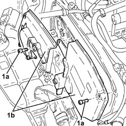
Applies to: engines: 1.9 JTD 16v; all production periods
Refitting
RemovingPlace the upper protective timing covers back in their housings and secure them using the bolts.
Fit the lower protective timing cover and secure using the bolts.
Proceed with refitting 1092G20 engine component single belt fixed tensioner - one - r + r .
Proceed with refitting 1092A10 Crankshaft services PULLEY - R.R. .
Proceed with refitting 1092G10 single engine belt r r .
Proceed with refitting - 7055B91 Right front WHEEL ARCH LINER - R.R. .
Proceed with refitting 7055B54 under-engine guard - r r .
Proceed with refitting 4450B04 right front wheel r r .
Proceed with refitting 1060G80 ds electric injection control unit - r r .
Proceed with refitting 1008C10 power unit upper reaction link r r .
Connect the negative (-) battery terminal.
Proceed with refitting 1016A10 sound-proofing cover - r + r .
Remove the car from the ramps.
Applies to: engines: 2.4 JTD 20v; all production periods
Removing
RefittingPosition the vehicle on the ramp.
Proceed with removal 4450B04 right front wheel r r .
Proceed with removal 7055B54 under-engine guard - r r .
Proceed with removal - 7055B91 Right front WHEEL ARCH LINER - R.R. .
Proceed with removal - 7055B66 Engine compartment DUST SHIELD protection in right front wheel arch - R.R. .
Proceed with removal 1092G10 single engine belt r r .
Proceed with removal 1092A10 Crankshaft services PULLEY - R.R. .
Proceed with removal 1092G21 engine component single belt fixed tensioner - r rwith belt removed .
Proceed with removal 1016A10 sound-proofing cover - r + r .
Proceed with removal 1008C10 power unit upper reaction link r r .
Position a hydraulic jack under the gearbox.
1. Undo the bolts fixing the power unit gearbox side rigid support to the flexible mounting.
Lower the hydraulic jack slowly until the drive shaft joint is resting ont he front suspension beam.
Remove the hydraulic jack from under the gearbox.
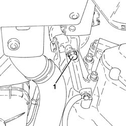
Applies to: engines: 2.4 JTD 20v; all production periods
1. Undo the bolts (1a) and remove the upper protective intake side timing cover (1b).
2. Undo the bolts (2a) and remove the upper protective exhaust side timing cover (2b).
3. Undo the bolts (3a) and remove the lower timing cover (3b).
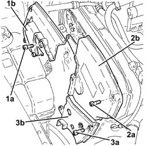
Applies to: engines: 2.4 JTD 20v; all production periods
Refitting
RemovingFit the lower protective timing cover and secure using the bolts.
Fit the upper protective timing gear cover, exhaust side, and fix it using the bolts.
Fit the upper protective timing gear cover, intake side, and fix it using the bolts.
Position a hydraulic jack under the gearbox.
Using the hydraulic jack, place the gearbox side rigid support in contact with the flexible mounting.
1. Undo the bolt fixing the gearbox side rigid power unit support to the flexbile block to the specified torque.
| Fastening | Component | Ø | Value (daNm) |
|---|---|---|---|---|
1 | - | - | - | - |
Remove the hydraulic jack from under the gearbox.
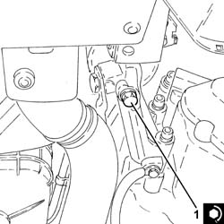
Applies to: engines: 2.4 JTD 20v; all production periods
Proceed with refitting 1008C10 power unit upper reaction link r r .
Proceed with refitting 1016A10 sound-proofing cover - r + r .
Proceed with refitting 1092G21 engine component single belt fixed tensioner - r rwith belt removed .
Proceed with refitting 1092A10 Crankshaft services PULLEY - R.R. .
Proceed with refitting 1092G10 single engine belt r r .
Proceed with refitting - 7055B66 Engine compartment DUST SHIELD protection in right front wheel arch - R.R. .
Proceed with refitting - 7055B91 Right front WHEEL ARCH LINER - R.R. .
Proceed with refitting 7055B54 under-engine guard - r r .
Proceed with refitting 4450B04 right front wheel r r .
Remove the car from the ramps.
Topics linked from this page (14)
- 1008C10 power unit upper reaction link r r
- 1016A10 sound-proofing cover - r + r
- 1016A40 ignition coil cover on cylinder head- r+r
- 1060G80 ds electric injection control unit - r r
- 1092A10 Crankshaft services PULLEY - R.R.
- 1092A12 crankshaft pulley - r+r for versions with air conditioner
- 1092G10 single engine belt r r
- 1092G20 engine component single belt fixed tensioner - one - r + r
- 1092G21 engine component single belt fixed tensioner - r rwith belt removed
- 4450B04 right front wheel r r
- 4450B10 Front WHEEL (one) - R.R.
- 7055B54 under-engine guard - r r
- 7055B64 Engine compartment DUST shield in front wheel arch (one), left or right - R.R.
- A1B Battery ( BATTERY NEGATIVE )
Topics that link to this page (59)
- 1008C14 engine link bracket - r r
- 1008C18 link mount on engine - r r
- 1008C19 engine link mount - r r
- 1016A30 left cam cover - r + r and replace gasket
- 1016A36 left hand and right hand cam cover - r+r
- 1016B10 single cylinder head extension - change gasket
- 1016C10 cylinder head - r + r and replace gasket
- 1016D21 lh cylinder head - r r and replace gasket for versions with air conditioner
- 1016D25 rh cylinder head - r r and replace gasket for versions with air conditioner
- 1020A20 crank case oil sump - r + r clean seals for sealant application
- 1020D12 front crank shaft oil seal cover - r + r and replace seals
- 1020D14 front crank shaft oil seal cover - r + r and replace seals for versions with oil pump on crank shaft, timing side
- 1020D18 front crank shaft cover oil seal - replace
- 1020E10 oil seal cover (one) - l or r - on counter-rotating shafts - r + r and replace seals
- 1020E20 front oil seal of one counter-rotating shaft, l or r - r + r
- 1028H10 connecting rod and piston set - r r
- 1028H20 piston with connecting rod - r r
- 1028H21 piston with connecting rod - r r
- 1032B10 toothed timing belt - r + r for timing adjustment or replacement
- 1032B14 toothed timing belt - r + r for timing adjustment or replacement versions with air conditioner
- 1032B46 toothed drive pulley - r + r
- 1032B47 toothed drive pulley - r r for versions with air conditioner
- 1032B52 toothed driven pulley (one) - r + r
- 1032B55 lh head toothed drive pulley - r r for versions with air conditioner
- 1032B59 rh head toothed drive pulley - r r for versions with air conditioner
- 1032B60 bolt pulley - r r
- 1032B62 a/c duct pulley - r r
- 1032C18 mobile timing system tensioner - r + r for 24 valve engines
- 1032C19 mobile timing belt tensioner - r r for versions with air conditioner
- 1032C31 fixed timing tensioner - r r
- 1032C32 fixed timing system tensioner (one) r + r
- 1036B10 overhead camshaft - r r on vehicle
- 1036C10 camshaft in cylinder head - r r on vehicle
- 1036E11 camshafts in left hand cylinder head - r r on vehicle for versions with air conditioner
- 1036E15 camshafts in rh cylinder head - r r on vehicle for versions with air conditioner
- 1036E19 camshafts in lh and rh cylinder head - r r on vehicle for versions with air conditioner
- 1036E54 front oil seals of l/h overhead camshaft - replace
- 1036E58 front oil seal of r/h overhead camshafts - replace
- 1036H57 hydraulic tappets all r r
- 1036C10 camshafts in cylinder head extension - r r - includes cylinder head extension replacement if necessary
- 1036L10 camshafts in cylinder head extension - r r - includes cylinder head extension replacement if necessary
- 1036L20 camshaft idler gears - replace
- 1036L30 front oil seal of intake camshaft in cylinder head extension replace
- 1056B51 cam angle sensor r + r
- 1060E10 pressure pump - r r
- 1060E30 pressure pump pulley - r r
- 1060E40 supplementary pressure pump - r r
- 1060G22 cam angle sensor - r r
- 1072B10 inlet manifold - r + r and replace seal
- 1072B50 sleeves connecting air capacity box to inlet manifold is - r+r
- 1084B23 oil pump control return - r r
- 1084B26 emgine oil intake duct - r r
- 1088C10 water pump - r + r
- 1088C12 water pump - r+r for versions with air conditioner
- 1092E10 counter-rotating shaft drive toothed belt - r + r
- 1092E16 counter-rotating shaft drive toothed belt tensioner - r + r
- 1092E22 counter-rotating shaft drive toothed belt drive pulley - r + r
- 1092E26 counter rotating shaft pulley - r + r
- 4130B32 power steering pump mount - r r